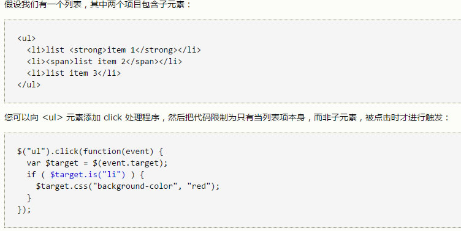
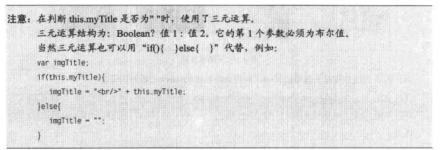

return false
当在函数中有出现'return false'时，表示事件处理阻止了默认的事件行为并停止了事件通过dom向上冒泡。
例：如果xxx是一个a标签,那它的默认行为是跳转，当设置了return false;时，它就不会跳转。
.indexOf()
方法可返回某个指定的字符串值在字符串中首次出现的位置。
注释：indexOf() 方法对大小写敏感！
注释：如果要检索的字符串值没有出现，则该方法返回 -1。
is()方法
is() 根据选择器、元素或 jQuery 对象来检测匹配元素集合，如果这些元素中至少有一个元素匹配给定的参数，则返回 true。

hasClass()方法
$("p").hasClass("another") == $("p").is("another")
.find()
find() 方法获得当前元素集合中每个元素的后代，通过选择器、jQuery 对象或元素来筛选。
.filter()
filter() 方法返回符合一定条件的元素
该方法让您规定一个条件。不符合条件的元素将从选择中移除，符合条件的元素将被返回。
该方法通常用于缩小在被选元素组合中 搜索元素的范围。
例：返回带有类名"intro"的所有p元素
$("p").filter(".intro")
filter() 方法是与 not() 方法相对的
jQuery :first
:first 选择器选取第一个元素。
最常见的用法：与其他元素一起使用，选取指定组合中的第一个元素
三元运算结构
Boolean?值1：值2。它的第1个参数必须为布尔值。
